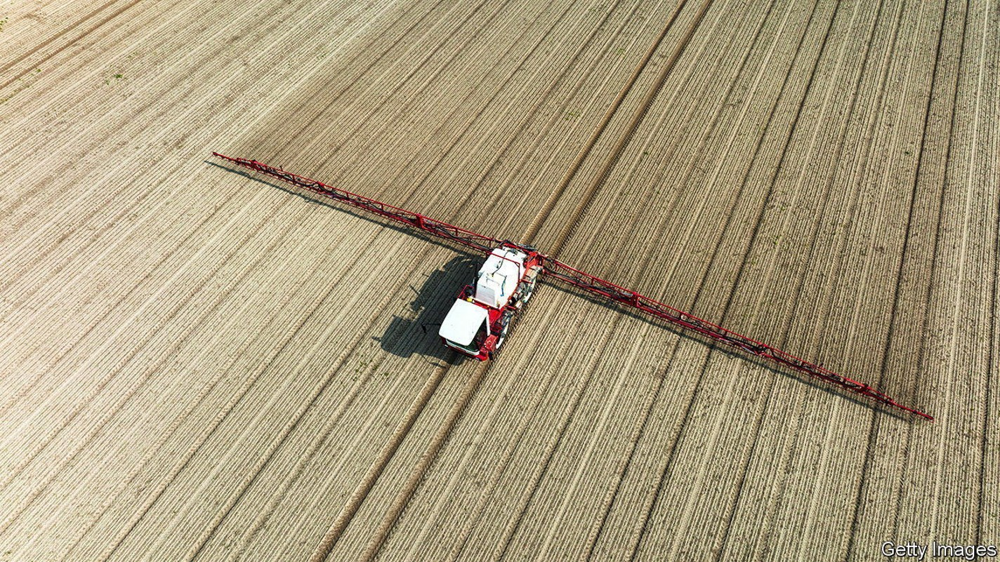
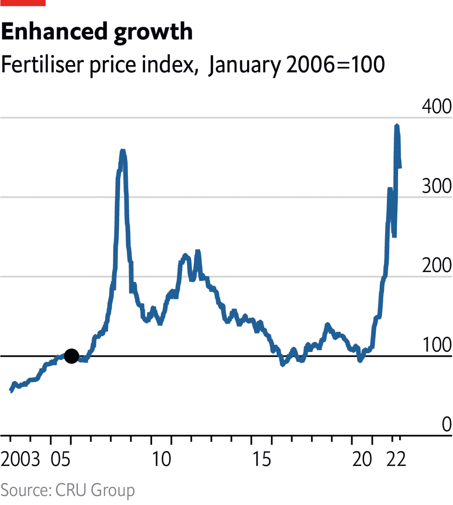
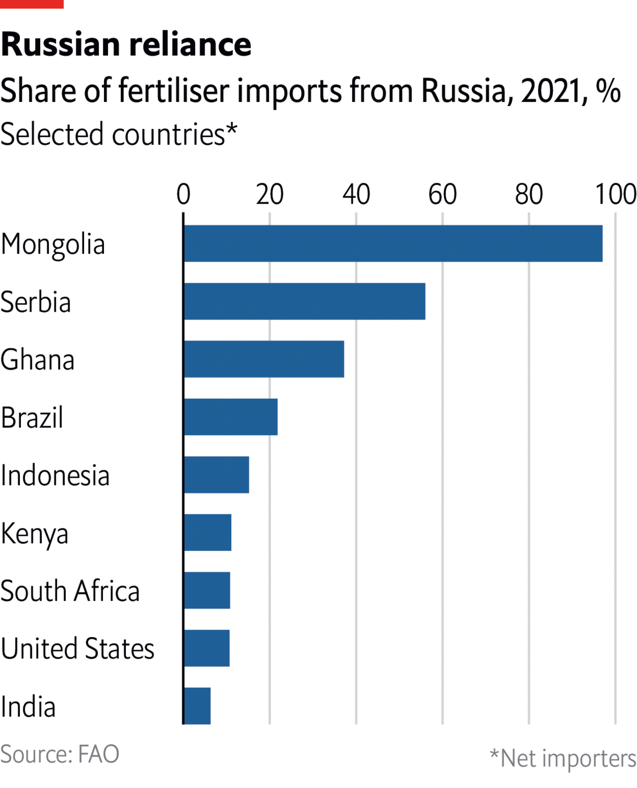

The world relies on agrichemicals to feed itself. Rising costs will play havoc with harvests

AS WELL AS bringing devastation to Ukraine, Vladimir Putin’s war risks tipping millions of people around the world into hunger. Russia and Ukraine supply 28% of globally traded wheat, 29% of the barley, 15% of the maize and 75% of the sunflower oil. Sanctions on Russia, and the blockade of Ukraine’s ports, have stopped much of this from getting out. And farmers elsewhere are struggling to make up the shortfall, in part because profit margins are being squeezed by the surging cost of fertiliser. Why is fertiliser so expensive?

Fertiliser has played an important role in the green revolution—the increase in agricultural yields seen in much of the poor world over the past six decades. In 1960 harvests without fertiliser supported 87% of the world’s population, according to Oxford Analytica, a research firm. By 2015 that had fallen to just 52% of the population. There are three main types: nitrogen-based fertiliser (of which the only expensive ingredient is natural gas), potash (which provides potassium) and phosphates. Fertiliser prices rose sharply in 2021 (see chart) because of a number of factors, prime among them the rising cost of energy and transport as the economic effects of the covid-19 pandemic wore off. Sanctions imposed in December 2021 on Belarus, which produces 18% of the world’s potash, over its government’s attempts to foment a migrant crisis in Europe, made things worse.

Russia’s invasion and the sanctions that followed have caused prices to climb further. In 2021, 25 countries got more than 30% of their fertiliser from Russia. In many eastern European and Central Asian countries that was over 50%. In Europe, energy-security concerns are restricting the use of natural gas to make nitrogen-based fertiliser. And while Nigeria and Qatar, flush with natural gas, are opening new nitrogen plants, and Canada has room to increase potash production, this will take time. Meanwhile prices are expected to stay high.
That will play havoc with harvests. Farmers may be forced to use less fertiliser, reducing yields and the quality of crops. Alternatively they may switch to those that require less fertiliser, such as soybeans, further reducing the supply of crops such as wheat and corn. Producers in America are expected to plant almost 37m hectares of soybeans in 2022, a record high and a 4% increase over 2021, according to government forecasts. Corn plantations, meanwhile, will fall by 4% to 36m hectares. Wheat will remain largely unchanged.
Can their use be reduced? Modern farming techniques such as soil spectroscopy can accurately measure the nutrient levels in soil, allowing for more targeted use of fertilisers. But the technology required is expensive, so is unlikely to help farmers in poor countries. A lower-tech approach would be to use less-intensive farming methods which maintain soil quality, such as crop rotation, tillage that leaves old crop residue behind or “agroforestry” (combining trees with crops in fields). But these methods take time, effort and foresight, and are neither as quick nor effective as modern fertilisers. Sri Lanka shows the difficulty of farming without agrichemicals. In 2021 the government rushed through a complete ban on fertiliser imports as part of a push to become the world’s first fully organic producer of food. Farmers warned of crop losses, food prices spiked and the president declared a state of emergency. The ban was eventually reversed in part (though Sri Lanka’s economic problems have since gone from bad to worse). For now, there is no easy alternative to fertiliser if the world is to maintain food production at anything like its current levels. That means higher food prices and rumbling stomachs.